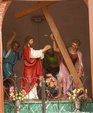
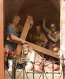
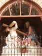
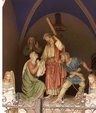

Obok świątyni, w malowniczym wąwozie znajduje się wspaniała KALWARIA WARMIŃSKA. Zbudowano ją w latach 1878-1894.
W murowanych z kamienia i cegły kaplicach znajdują się artystycznie wykonane rzeźby, ukazujące naturalistycznie mękę Chrystusa.
Co do długości i ukształtowania terenu, KALWARIA WARMIŃSKA wiernie naśladuje jerozolimską Drogę Krzyżową.Wszystkiego nie da się wyrazić słowami - do Glotowa trzeba przyjechać,
stąd blisko do Olsztyna, Gietrzwałdu czy Świętej Lipki.

W drugiej połowie XIX wieku zamożny mieszkaniec Głotowa Jan Merten udał się z pielgrzymką do Ziemi Świętej.
Stamtąd przywiózł pomysł wybudowania w swojej wsi kalwarii wzorowanej na jerozolimskiej. Małe kamyczki, które znalazł na Drodze Krzyżowej w Jerozolimie zabrał ze sobą
jako relikwie zamierzając umieścić je w mających powstać kaplicach - stacjach.
Budowę Głotowskiej Kalwarii rozpoczęto 29 lipca 1878 roku. Jak podają kroniki ludność katolicka diecezji warmińskiej tłumnie zgłaszała się do pracy,
a także składano przy tym hojne ofiary pieniężne. Wąwóz pod Kalwarię wykonano ręcznie wykorzystując przy tym niewielki jar ze strumykiem.

Oblicza się, że w ciągu 16 lat budowy w pracach uczestniczyło około 70 tysięcy ludzi. Troszczono się, aby wiernie naśladować długość i nachylenie Drogi Krzyżowej z Jerozolimy,
po której w Wielki Piątek szedł na Golgotę Chrystus. Po kilkunastu latach mozolnej pracy nastąpił finał.
W piątek 18 maja 1894 roku ówczesny biskup warmiński Andrzej Thiel dokonał poświęcenia Kalwarii.
Pomiędzy wysokimi drzewami wznoszą się murowane z kamienia i cegły neoromańskie i neogotyckie kaplice. W ich wnętrzach znajdują się artystycznie wykonane
rzeźby ukazujące naturalistycznie mękę Chrystusa.

W każdej stacji umieszczono w drewnianych krzyżach przykrytych kloszami małe jerozolimskie kamyki-relikwie. Do dziś zachowały się one już tylko w niektórych kaplicach.
Oprócz 14 stacji Drogi Krzyżowej umieszczono tu także grotę Matki Bożej z Luordes ze źródłem oraz kaplicę modlitwy Pana Jezusa w Ogrójcu.
Licząc sobie ponad sto lat Kalwaria Warmińska w Głotowie zwana też Warmińską Jerozolimą należy do najlepszych w Polsce,
zachwyca bowiem nie tylko pięknem zabytków ale i malowniczym położeniem.

Sanktuarium można odwiedzać przez cały rok, choć najpiękniej jest tu od kwietnia do listopada.